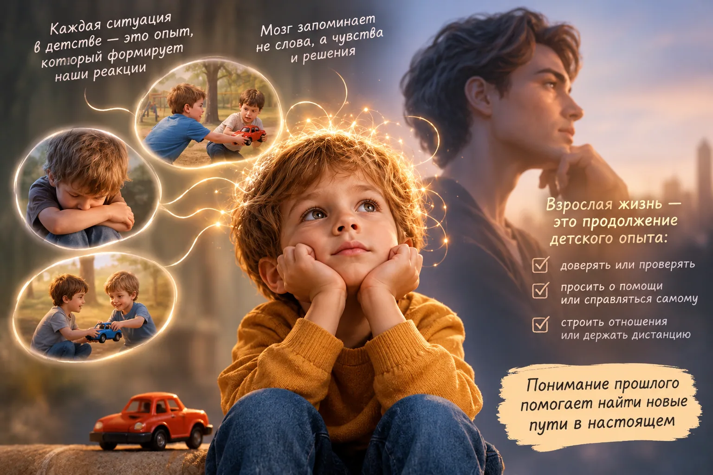

Моё мнение может идти вразрез с вашим и с тем, что вы привыкли слышать, но оно позволит читателю посмотреть на происходящее под другим углом и увидеть картину шире.
Вот возьмём клиента под именем N. Он не может построить гармоничные отношения со своей мамой. Придя к психологу, он слышит: «У вас много травм, они вам мешают».
Но не травмы это, а обида. И возникнуть она могла из-за массы факторов: начиная от подорванной самооценки и заканчивая фрустрацией (не получил в определённый момент то, чего хотелось). И почему-то во всём виновата мама, хотя чувства испытывает сам N.
Формирование личности, с научной точки зрения, начинается приблизительно с трёх лет. Именно в этом возрасте начинает проявляться и закладываться Я-концепция — представление человека о самом себе.
Мозг любого человека по природе своей ленивый орган, и работать он не любит. Поэтому мы постоянно боремся сами с собой: где-то проигрываем, где-то выигрываем. Но мозг начинает активно работать именно в некомфортных для него условиях! Тогда он начинает напрягаться, чтобы прийти к тому состоянию, в котором ему хорошо.
Формирование личности продолжается на протяжении всей жизни человека, и большая ошибка говорить: «Он такой и другим уже не будет!» Будет! Только при одном условии: если он этого захочет.
В детском возрасте ребёнка проще напугать, удивить или в принципе вызвать у него те или иные чувства, потому что опыта и багажа знаний у него мало. С возрастом это сделать сложнее: уже фокус с оторванным пальчиком в 20 лет не вызывает удивления. Но здесь есть парадокс: мозг ничего не забывает. И те копинг-стратегии, которые он выбрал, например, в пять лет, он применяет и в 30.
Наш N в 3,5 года играл на детской площадке. К нему подходит мальчик постарше и отбирает его красивейшую новую машинку!
Мозг: «На нашу территорию произошло вторжение, безопасность под угрозой».
Если такая ситуация произошла впервые, то опыта справляться с ней ещё нет. Именно здесь начинает формироваться и прокладываться новая нейронная связь.
N автоматически пытается вырвать машинку обратно, но парень сильнее, не отдаёт её и при этом убегает к маме, чтобы сохранить приобретённое имущество.
Мозг: «Мы одни не справляемся, нужна помощь. Против мальчика нам не удалось устоять, он ещё и к большому человеку пошёл. Нам тоже нужна подмога».
N смотрит на эту картину и бежит к своей маме.
А вот тут уже начинается формирование личности маленького N. Именно эта ситуация наглядно показывает, что в первую очередь дети формируются в среде, в которой находятся. Каждая мама — это тоже отдельный личностный конструкт, который будет передавать свой опыт.
N, плача, пытается объяснить маме, что у него больше нет любимой машинки. На что мама предположительно говорит: «А ты подойди к нему и попроси отдать».
Мозг: «Мы можем добиться своего комфорта, подойдя и попросив».
N страшно, но он идёт это делать. Подойдя к мальчику и сказав: «Отдай», он слышит, как мама мальчика объясняет, что машинка не его, переключает внимание ребёнка и возвращает N его транспорт.
Мозг: «Мы можем добиться своего комфорта, подойдя и попросив».
Но в жизни всё не так однозначно. Эта нейронная связь, конечно, сформировалась, потому что обе мамы поступили щадяще (не скажу, что правильно, ведь правильного и неправильного не существует).
На следующий день ситуация повторяется с нашим N, но уже машинку забрал другой мальчик.
N так же пытается сразу её забрать, терпит поражение. Мальчик уходит к маме. N идёт за ним решать вопрос так, как уже умеет, но тут сталкивается с другой картиной.
Мама мальчика не может противостоять потребностям своего ребёнка (причин также масса) и говорит N: «А давай он чуть-чуть поиграет, а ты поиграешь с его машинкой. Посмотри, какая у него тоже есть красивая машинка».
Машинка N понравилась: она красивая, большая. Он соглашается на такой обмен и довольный бежит к маме показать своё новое имущество.
Мозг: «Благодаря умению договариваться у нас получается достичь состояния комфорта».
Ситуации повторялись неоднократно, и паттерн закрепился.
Договор = комфорт.
Но вот N снова на детской площадке, и очередная знакомая ситуация повторяется (мама N отошла за чем-то). Подойдя к мальчику для решения вопроса, он видит другую картину.
Мама мальчика отталкивает N и говорит, что это машинка её ребёнка и ничего он отдавать не будет.
Мозг: «Как?! Взрослые не всегда говорят правду и могут быть несправедливыми?»
N в шоке, с плачем бежит к маме, а та женщина с ребёнком уже ушли с его машинкой.
Придя к маме и рассказав о ситуации, N мог услышать в ответ: «Мы купим новую». А ещё лучше, если мама попробует найти ту женщину и вернуть машинку, сказав: «Ты молодец, но пока ещё слишком мал, чтобы решить вопрос со взрослыми, которые действительно не всегда бывают правы».
N на всю жизнь запомнит не женщину, а саму ситуацию: быть дипломатом хорошо, но не всегда это получается. Люди разные, но в этом нет ничего страшного, потому что ситуацию можно решить другим способом.
Как вы понимаете, вариантов развития ситуации и деталей может быть масса. И отклонение от описанного выше сценария будет формировать другую нейронную связь.
Например:
- Если бы мама N не поддержала его в конце, а отругала, у него могло бы появиться чувство вины.
- Если бы мама не пообещала решить вопрос, а просто утешила его, мозг мог бы запомнить, что мама виновата в том, что у него нет машинки и он испытывает неприятные чувства, и так далее.
Именно эта женщина с мальчиком запустили новый слой формирования личности. Именно в этот момент мозг начал искать способ вернуться к комфорту, в котором находился ранее.
Какой именно путь выберет N, зависит от многих факторов, просчитать которые невозможно!
Но, становясь взрослым, он почему-то, например, не верит людям и всё проверяет по сто раз или не может делегировать и всё делает сам.
И вроде бы его хвалят на работе за то, что он такой молодец и многого добивается, но удовольствия ему это не приносит. Он выгорает, участвуя в гонке с самим собой. А может быть и наоборот: он получает от этого удовольствие и становится успешным бизнесменом.
Всё перечисленное выше — приблизительный конструкт, который даёт понимание того, как формируется личность.
Однозначного ответа нет, так же как нет и универсального сценария, который подходил бы всем. Именно поэтому то, что хорошо для одного, может быть губительно для другого. Для каждого важен индивидуальный подход.
Была ли та женщина травмой? Или она стала толчком для развития?
Нет однозначного ответа.
Именно поэтому уважающий себя психолог не лезет туда, где человек справляется самостоятельно, давая ему возможность для формирования собственной личности.
Но если происходящее доставляет ему дискомфорт и мешает полноценно использовать свои возможности, это уже требует корректировки.
Возможно, таких женщин в его жизни было не одна, а несколько. Или решений, приводящих к комфорту, так и не нашлось. Тогда это может стать страхом, который будет ограничивать человека разными способами.
И, разблокировав даже во взрослом возрасте возможность находить решения, человек заживёт по-новому, открыв для себя ещё один путь достижения целей: деньги, отношения, карьера и так далее. У каждого своё.
Обо всём этом мы можем поговорить на консультации, разбирая именно вашу проблему и находя решение, комфортное именно для вас.

Приходите, и вы поймёте, что всё в жизни проще, чем кажется.